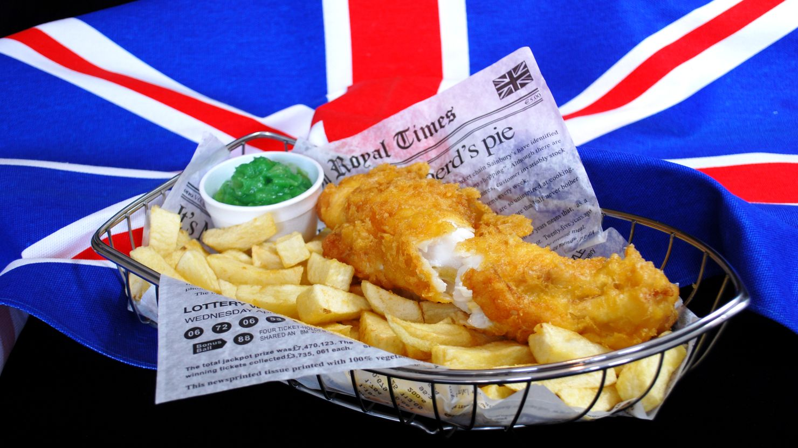

Fish and Chips

Description
This is a traditional fish and chips recipe, fried with a wet batter. It gives the perfect crispy texture with a moist, flakey fish inside. Follow my tips for the best fish to use and step-by-step photos and video to make sure it turns out just as great as your favorite restaurant! I've had Fish and Chips in England, and I've got to say,this recipe stacks up! It may sound intimidating, but you won't believe how easy it is to make your own fish and chips.
Ingredients
In traditional fish and chips, the fish is dipped/battered in a wet batter, then immediately put in the frier so that the batter cooks thick and puffy and crispy on the outside, followed by a little chewiness, and the fish inside is flakey and moist. Some fish and chips recipes use a “dry batter” made from breadcrumbs to create a crispy coating, which works for baked or air fryer fish and chips.
- Fish: Cod, pollock, haddock, catfish, perch, or mahi-mahi will all work in this recipe. I prefer fresh, thick cuts. If you use frozen, make sure it is completely thawed.
- Beer: Club soda or sparkling water can be substituted, but beer adds a much richer flavor to the batter. The bubbles create pockets of air in the mixture for a light, crisp batter. The end result doesn't taste like beer.
- Baking Powder: Helps with the light, crisp batter texture.
Steps
- Heat Oil: Pour 1-2 inches of oil in a large pot and heat to 350 degrees.
- Prepare Fish: If frozen, thaw fish completely. Depending on the size and shape of your fillets, cut them into strips that are long and at least 1 inch wide. Lay the fish fillets on a paper towel and pat dry. Season them with sea salt and pepper and then dredge each filet in a little bit of flour.
- Make Batter: In a large bowl, mix the flour, cornstarch, baking powder, paprika, salt and pepper. Whisk in the beer (or sparkling water) to the flour mixture and continue mixing until you have a slightly thick, smooth batter. If it’s too thick, add a little more beer.
- Dip Fish in Batter: Dip prepared fillets into the batter and use a spoon if needed to help coat the entire fillet. (If you have any leftover batter, you could also dip and fry onion rings, calamari, or shrimp!)
- Fry Fish: Working in small batches so you don’t overcrowd the pans, carefully lower a few dipped fillets at a time into the hot oil. Fry for approximately 5-7 minutes, turning occasionally, until the batter is crisp and golden and the fish is perfectly cooked. I like to cook just one at the beginning to get an estimated cook time, before cooking more. You don’t want to overcook the fish! Keep in mind the fish will continue to cook a little more as it cools off on the paper towel.
- Remove to Paper Towels: Once cooked, remove the fillets from the hot oil and drain on paper towels. You can keep the cooked fish warm in a 200 degree oven while you cook it all, if you want.
- Serve: Use the same pot of hot oil to make French Fries, or make my Baked French Fries or Air Fryer French Fries. Serve with homemade tartar sauce (it can be made days ahead of time!) and malt vinegar, for dipping.
These are the BEST fish and chips, I can't wait for you to try them!
Home